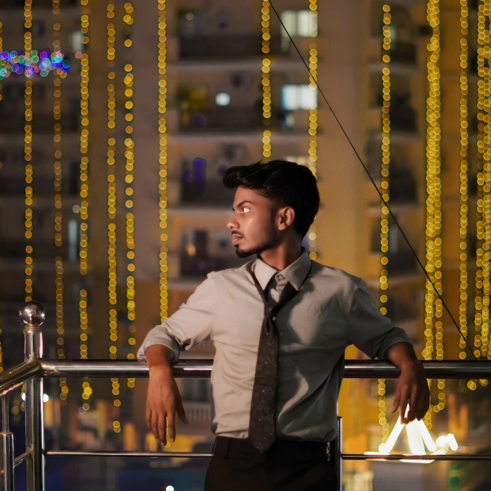

01 / FEATURED
VIDEO EDITOR · CREATOR · EDUCATOR
Editing for
impact.
Teaching the craft.
Cinematic edits, purposeful motion and practical education for creators who want their work to stay with people.
BASED IN INDIAAVAILABLE WORLDWIDE

STAR VISUALS / CREATIVE DIRECTOR01 — 06
SELECTED WORK / 2026
Stories with
shape and rhythm.
From atmosphere-led films to fast, expressive cuts, every frame is built around what the story needs.
02 / CINEMATIC
03 / ATMOSPHERE
04 / VISUAL STORY
STAR VISUALS ACADEMY
Learn the edit.
Make it yours.
Practical learning for creators who want to understand the why behind every cut, colour choice and sound decision.
Editing
from scratch.
Build a reliable foundation from footage organisation to the final export.
Explore courses ↗Build your
visual language.
Develop a repeatable look with intentional colour, pacing and motion references.
View learning ↗Make the next
cut count.
Get clear, direct feedback on your work and a practical path forward.
Start a brief ↗LET'S WORK TOGETHER
Have footage?
Let's make it move.
Bring the idea, the rough cut or the raw material. We will find the strongest version of the story together.